تطبيق نقطة البيع السحابية هو الأداة الأساسية التي يستخدمها الكاشير والمديرون لمعالجة المعاملات وإدارة الطلبات وتنفيذ المدفوعات في الوقت الفعلي. الواجهة مناسبة للمس، وسريعة، وتدعم العربية والإنجليزية، مع تحميل ديناميكي للمنتجات وتشغيل متعدد الفروع.
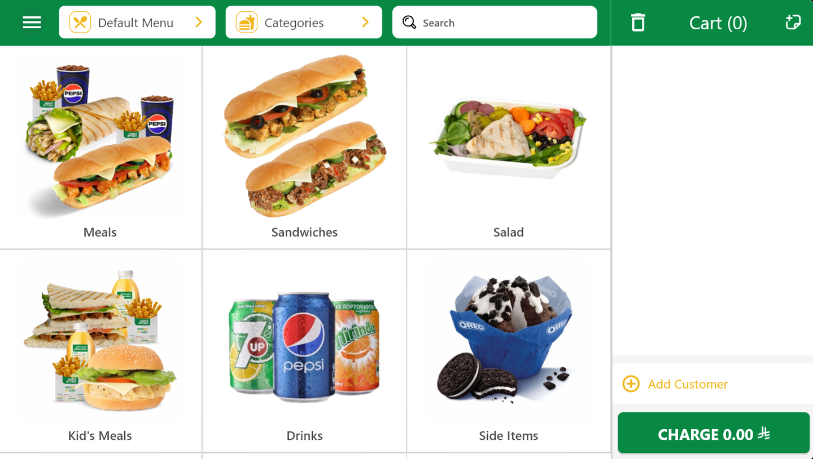
الواجهة الرئيسية لنقطة البيع السحابية المستخدمة في عمليات الكاشير اليومية.
نظرة عامة
يرشدك هذا الدليل عبر تشغيل التطبيق، دخول الموظف، تخطيط الواجهة، أخذ الطلبات، المفضلة، المدفوعات، الورديات، المخزون، إدارة النقد، التقارير، الإعدادات، وتبديل اللغة.
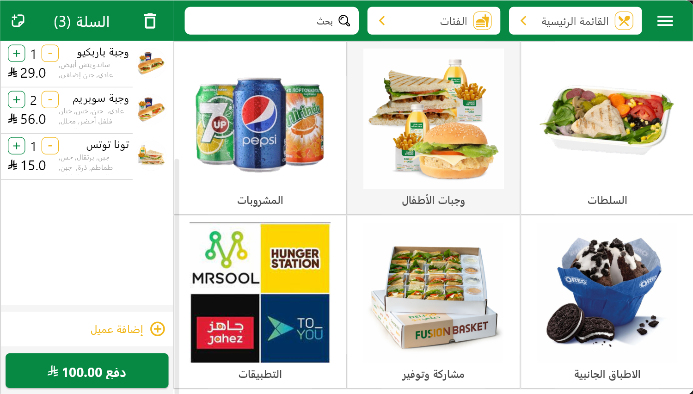
مساحة عمل الكاشير مع القائمة والسلة والإجراءات السريعة.
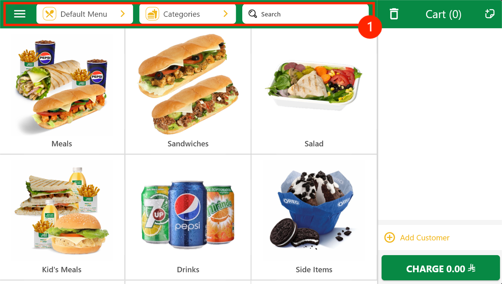
الشريط العلوي مع اختيار القائمة والفئات والبحث وأدوات السلة.
افتح تطبيق Smart Prints POS على محطة سطح المكتب أو جهاز Android. تعرض شاشة الدخول شعار Smart Prints مع الشعار النصي "Enhance Machines interaction with Humans".
أدخل اسم المستخدم في الحقل الأول وكلمة المرور في الحقل الثاني، ثم اضغط زر SIGN IN البرتقالي.
بعد تسجيل الدخول تظهر شاشة تحميل مع شريط تقدم برتقالي. انتظر حتى يكتمل قبل المتابعة.
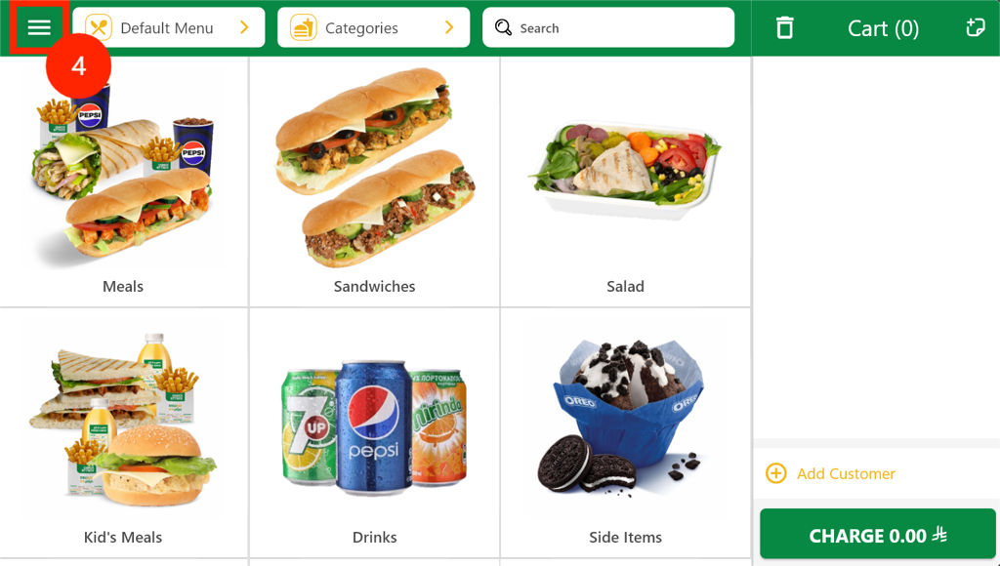
شاشة تسجيل الدخول الأولية عند تشغيل تطبيق نقطة البيع.
بعد تسجيل الدخول تظهر الشاشة الرئيسية لنقطة البيع بالمناطق التالية:
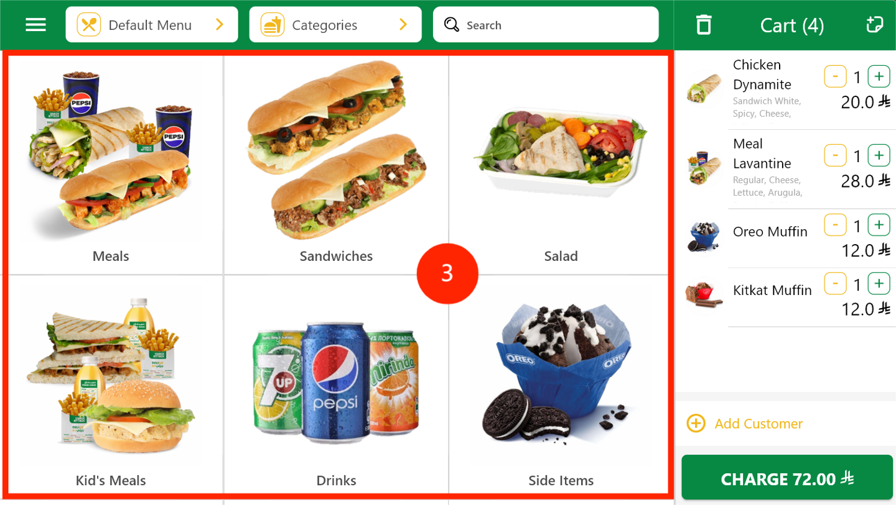
شبكة الفئات المعروضة في وسط شاشة نقطة البيع.
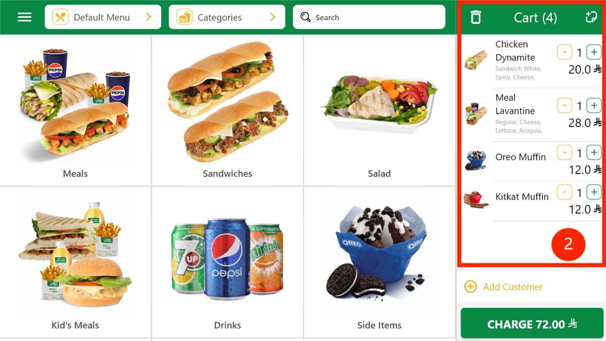
لوحة السلة تعرض العناصر المحددة والعميل وإجراء الدفع.
المنطقة
الوصف
الشريط العلوي
الشريط الأخضر في الأعلى يحتوي على قائمة Default Menu المنسدلة على اليسار، وقائمة Categories في الوسط، وشريط Search للبحث عن المنتجات بالاسم. على الجانب الأيمن ستجد أيقونة سلة المهملات لمسح السلة وعداد Cart الذي يعرض عدد العناصر المضافة حالياً.
شبكة الفئات (الوسط)
تعرض المنطقة الرئيسية فئات المنتجات كبلاطات صور كبيرة، مثل Meals و Sandwiches و Salad و Kid's Meals و Drinks و Side Items. الضغط على بلاطة يفتح منتجات تلك الفئة.
لوحة السلة (اليمين)
تعرض اللوحة اليمنى جميع العناصر المضافة للطلب الحالي. يعرض كل عنصر اسمه والإضافات المحددة وأزرار الكمية + و - وسعره. أسفل قائمة العناصر ستجد زر Add Customer وزر CHARGE الأخضر الذي يعرض الإجمالي الجاري.
القائمة الجانبية (اليسار)
اضغط على الخطوط الأفقية الثلاثة في الزاوية العلوية اليسرى لفتح القائمة الجانبية. تعرض شعار المطعم والموظف المسجّل حالياً وروابط التنقل إلى Cashier و My Orders و Online Orders و Customer Details و Shifts و Inventory و Cash Management و Reports.
من الشاشة الرئيسية، اضغط على أي بلاطة فئة لفتح قائمة منتجاتها. يتحدث الشريط العلوي ليعرض اسم الفئة النشطة. تعرض كل بطاقة منتج صورتها واسمها وسعرها في شارة صفراء. أيقونة القلب على كل بطاقة تتيح وضع العناصر كمفضلة.
للتبديل بين الفئات دون العودة إلى الشبكة، اضغط قائمة Categories المنسدلة في الشريط العلوي. تظهر قائمة تعرض Menu Favorites و Categories و Menu Offers وجميع الفئات الفردية مثل Meals و Sandwiches و Salad و Kid's Meals و Drinks و Side Items. اضغط أي عنصر للانتقال إليه مباشرة.
للبحث عن منتج، اضغط شريط Search واكتب اسم المنتج.
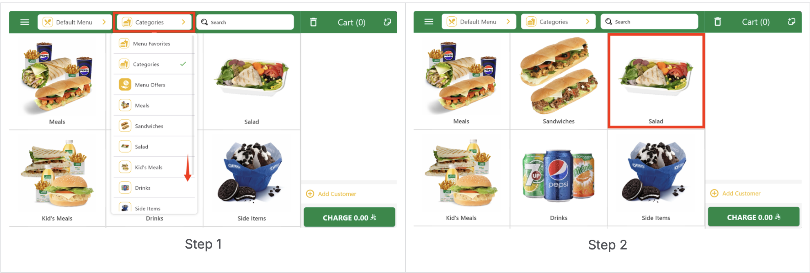
الانتقال من شبكة الفئات إلى قائمة المنتجات.
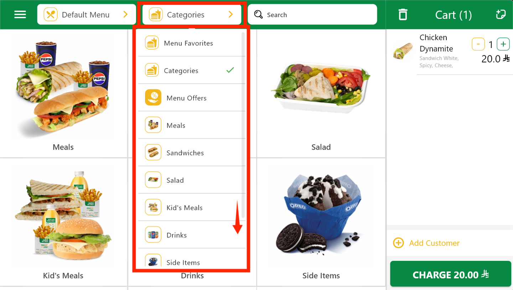
قائمة Categories للانتقال مباشرة بين أقسام القائمة.
اضغط أي بطاقة منتج لإضافته إلى الطلب. إذا كان للمنتج خيارات تخصيص، تظهر نافذة تعرض اسم المنتج، ومحدد الكمية بأزرار الناقص والزيادة، وسعر الوحدة والإجمالي الجاري، ومجموعات الخيارات المتاحة مثل Vegetables أو Dressing مع خيارات فردية كوسوم قابلة للاختيار.
الوسوم المعبأة (خلفية صفراء) تشير إلى إضافة محددة. الوسوم الفارغة (خلفية بيضاء) تشير إلى غير المحددة. اضغط أي وسم لتبديله. بعد اكتمال اختياراتك، اضغط ADD TO CART للتأكيد، أو CANCEL للرجوع.
يظهر العنصر فوراً في لوحة السلة على اليمين، مع اسم المنتج والإضافات المحددة والكمية والسعر. يتحدث زر CHARGE في الأسفل تلقائياً.
لتعديل الكمية مباشرة من السلة، استخدم أزرار + و - بجانب كل عنصر.
إجراءات السلة المتاحة في الزاوية العلوية اليمنى من الشاشة:
اضغط أيقونة سلة المهملات لمسح جميع المنتجات من السلة. تظهر نافذة تأكيد بعنوان "Delete Cart Products" تسأل "Do You Want to Delete All Products" مع زرّي NO و YES.
اضغط أيقونة الملاحظات لإضافة ملاحظة على مستوى الطلب. يظهر حقل نصي مع العنصر النائب "Add your notes here". اضغط زر التأكيد الأخضر لحفظ الملاحظة.
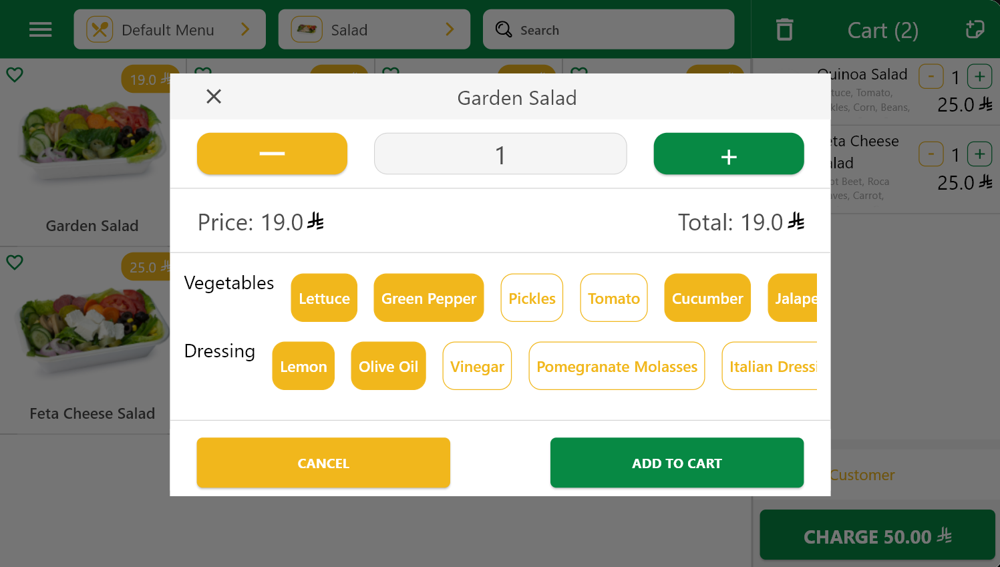
نافذة الإضافات لاختيار خيارات المنتج قبل إضافته إلى السلة.
لدى العديد من المطاعم منتجات تشكّل معظم مبيعاتها اليومية. فئة Menu Favorites تبقي هذه المنتجات الأكثر مبيعاً ظاهرة دائماً لتسريع أخذ الطلبات.
لوضع منتج كمفضل، اضغط أيقونة القلب على أي بطاقة منتج. يؤكد القلب الأخضر المعبأ إضافته إلى المفضلة.
للوصول إلى Menu Favorites، اضغط قائمة Categories المنسدلة في الشريط العلوي واختر Menu Favorites من أعلى القائمة. تتحدث الشبكة فوراً لتعرض منتجاتك المفضلة فقط.
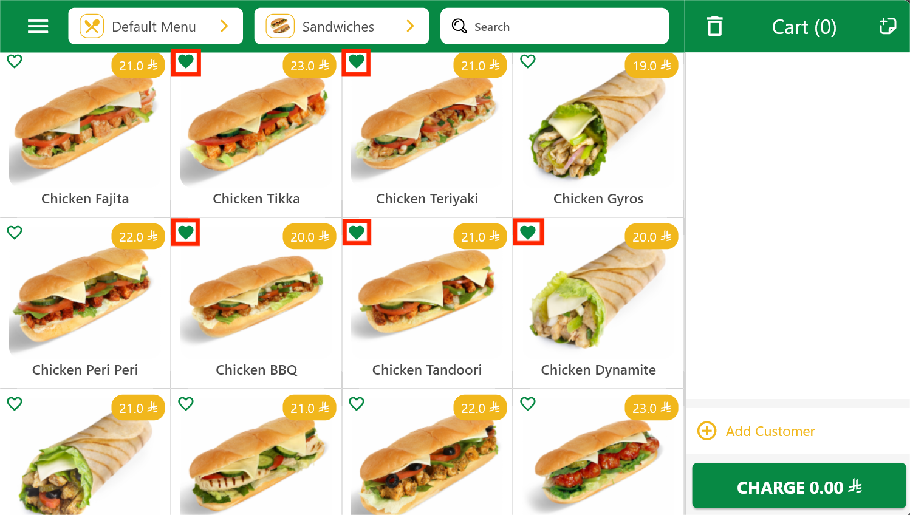
ضع المنتجات كمفضلة لإبقاء الأكثر مبيعاً على بعد ضغطة واحدة.
استخدم Menu Favorites لتقليل وقت التنقل خلال فترات الذروة وإبقاء المنتجات عالية الطلب أو هامش الربح دائماً على بعد ضغطة واحدة.
لعرض جميع الطلبات المسجّلة خلال الجلسة الحالية، اضغط My Orders من القائمة الجانبية.
تفتح شاشة الطلبات بعرض رأس Current Shift وزر تبديل في الزاوية العلوية اليمنى للتبديل بين عرضين.
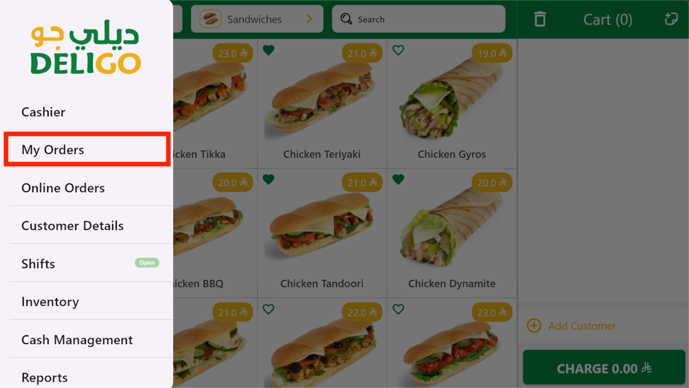
صفحة طلبات Current Shift المفتوحة من القائمة الجانبية.
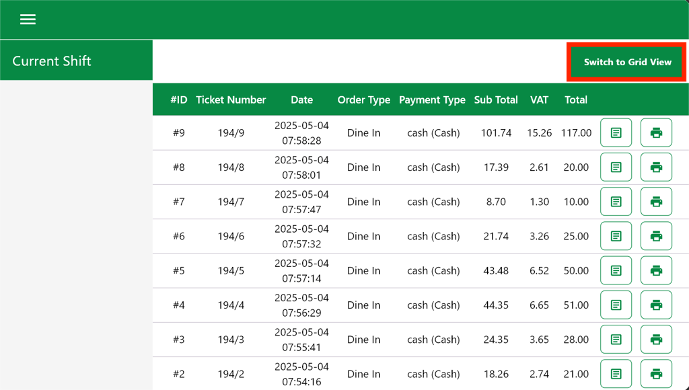
عرض جدول منظم يسرد التذاكر والتواريخ وأنواع الدفع والإجماليات.
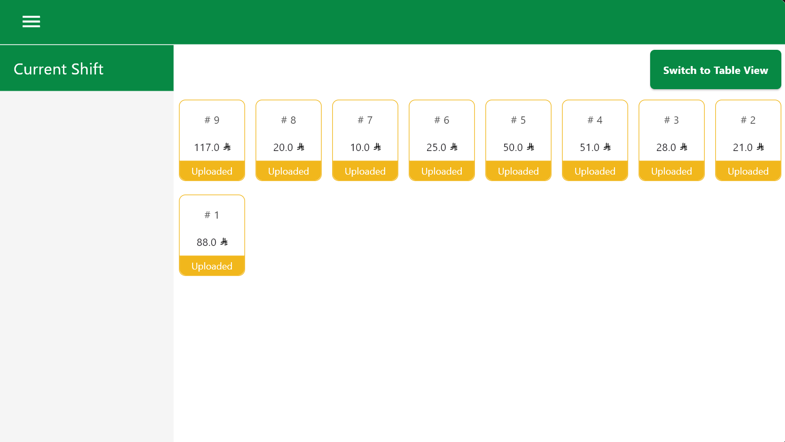
عرض الشبكة للطلبات المتزامنة كبطاقات فردية.
العرض
الوصف
Table View
يعرض الطلبات في قائمة منظمة بالأعمدة ID و Ticket Number و Date و Order Type و Payment Type و Sub Total و VAT و Total. لكل صف أيقونة طباعة وأيقونة إيصال على اليمين.
Grid View
يعرض كل طلب كبطاقة تُظهر رقم الطلب والمبلغ الإجمالي. لكل بطاقة شارة حالة Uploaded صفراء تشير إلى مزامنته مع الخادم.
يتيح قسم Customer Details إضافة عميل أو اختياره أثناء البيع لخدمة مخصصة وتتبع أفضل للطلبات.
انتقل إلى Customer Details من القائمة الجانبية. تعرض الشاشة قائمة بالعملاء الحاليين مع ID و Name و Type و Phone و Status وأيقونة تعديل في عمود Actions.
لإضافة عميل جديد، اضغط زر + الأصفر في الزاوية السفلية اليمنى. يظهر نموذج بالحقول التالية:
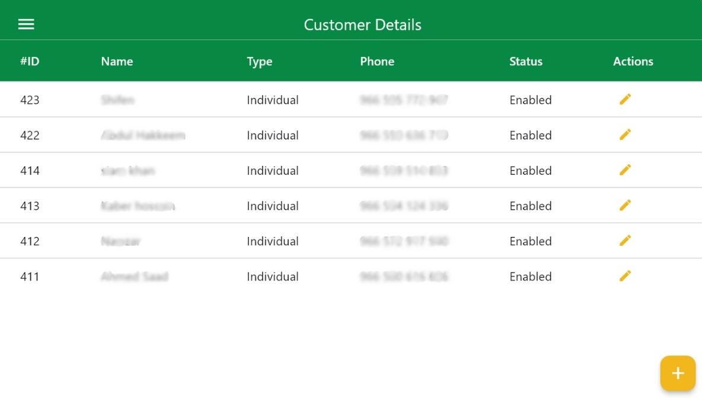
قائمة Customer Details لتصفح العملاء المحفوظين وتعديلهم.
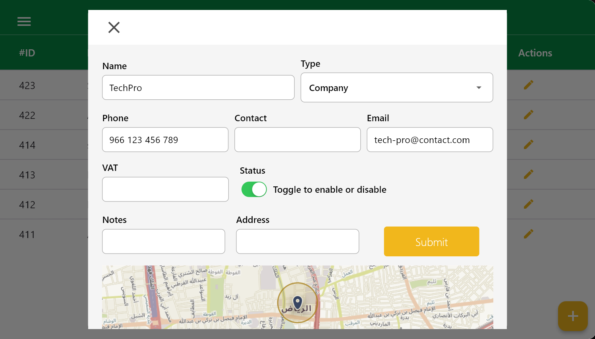
نموذج Add Customer مع حقول الاتصال والعنوان.
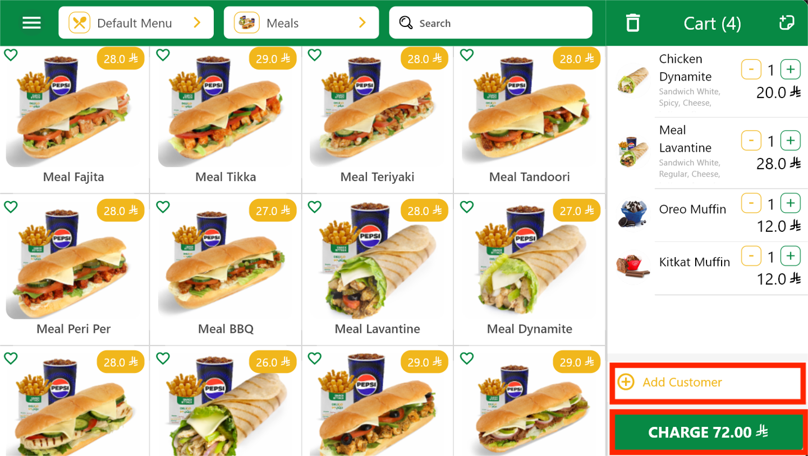
اربط عميلاً بالسلة النشطة قبل الدفع.
الحقل
التفاصيل
Name
الاسم الكامل للعميل
Type
Individual أو Company
Phone
رقم التواصل
Contact
جهة اتصال ثانوية إن وجدت
Email
عنوان البريد الإلكتروني للعميل
VAT
رقم الضريبة لعملاء الشركات
Status
مفتاح لتفعيل سجل العميل أو تعطيله
Notes
أي ملاحظات ذات صلة
Address
عنوان العميل
يتضمن النموذج أيضاً خريطة مدمجة في الأسفل لتحديد موقع العميل. اضغط Submit للحفظ.
إضافة عميل إلى الطلب تتيح إيصالات مخصصة وتدعم تتبع سجل العميل.
تساعد الورديات على تتبع نشاط الموظفين وتدفق النقد خلال ساعات عمل محددة. تدعم المساءلة والتسوية اليومية والتقارير حسب الوردية.
فتح وردية
بعد اختيار ملف الموظف وإدخال الرقم السري، يطلب منك التطبيق فتح وردية جديدة. تظهر نافذة بعنوان "Specify Cash Amount At The Beginning Of Shift" مع لوحة مفاتيح رقمية. أدخل مبلغ النقد الابتدائي في الدرج واضغط done، ثم اضغط Save لبدء الجلسة.
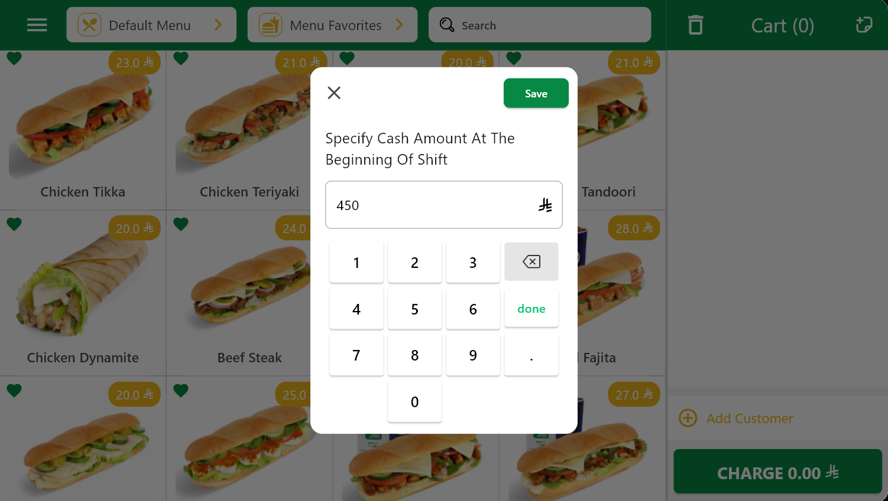
أدخل مبلغ النقد الافتتاحي لبدء وردية جديدة.
إغلاق وردية
لإغلاق وردية، انتقل إلى Shifts في القائمة الجانبية. تظهر شاشة ملخص الوردية مع رأس Date Time وعنوان Shift Summary. تظهر نافذة إغلاق بالحقول التالية:
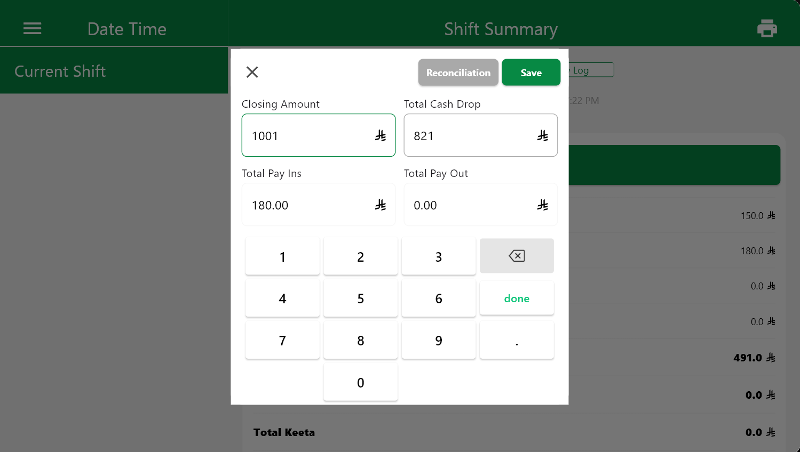
حوار إغلاق الوردية مع قيم التسوية ومبلغ الإغلاق.
الحقل
التفاصيل
Closing Amount
أدخل النقد الفعلي المحسوب في الدرج عند الإغلاق
Total Cash Drop
النقد المسحوب من الدرج أثناء الوردية
Total Pay Ins
إجمالي الإضافات النقدية اليدوية أثناء الوردية
Total Pay Out
إجمالي السحوبات النقدية اليدوية أثناء الوردية
استخدم لوحة المفاتيح الرقمية لإدخال مبلغ الإغلاق، اضغط done، ثم اضغط Save لإغلاق الوردية. يمكنك أيضاً الضغط على Reconciliation لمراجعة الفروقات قبل الحفظ.
تقرير الوردية
في نهاية كل وردية يُنشئ النظام تقرير وردية مطبوعاً. بناءً على التقرير الفعلي في التطبيق، يتضمن الأقسام التالية:
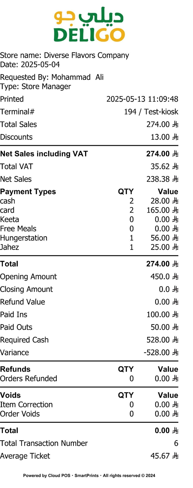
تقرير الوردية المطبوع يلخّص المبيعات ورصيد الدرج والأداء.
معلومات الرأس: اسم المتجر، التاريخ، اسم الموظف، نوع الموظف، وقت الطباعة، ورقم الجهاز.
ملخص المبيعات: Total Sales و Discounts و Net Sales including VAT و Total VAT و Net Sales.
أنواع الدفع: تفصيل حسب الطريقة يعرض الكمية والقيمة لـ Cash و Card و Keeta و Free Meals و Hungerstation و Jahez وأي طرق أخرى مُعدّة.
ملخص درج النقد: Opening Amount و Closing Amount و Paid Ins و Paid Outs و Required Cash و Variance.
المرتجعات والإلغاءات: Orders Refunded و Item Correction و Order Voids مع الكميات والقيم.
ملخص الأداء: Total Transaction Number ومتوسط مبلغ التذكرة لكل معاملة.
ادخل إلى وحدة المخزون مباشرة من تطبيق نقطة البيع بالضغط على Inventory في القائمة الجانبية.
تحتوي شاشة المخزون على لوحة يسارية بخمسة أقسام: Stock Status و Inventory Count و Waste و Preparation و Transfer و Reception.
تعرض اللوحة الرئيسية جدولاً بالأعمدة ID و Type و Item و Quantity. يمثل كل صف منتجاً ومستوى مخزونه الحالي. يمكنك تصفية العرض باستخدام مفاتيح الوحدات في الأعلى لـ Grams و Kg و Millilitres و Liters، واستخدام شريط البحث لإيجاد عناصر محددة.
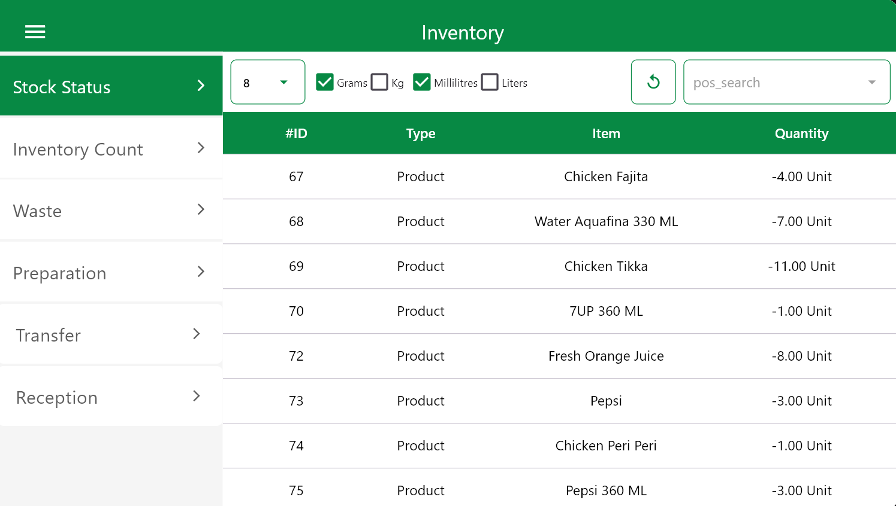
عرض المخزون داخل تطبيق نقطة البيع لفحص المخزون الحي.
لإدارة المخزون الكاملة بما في ذلك الوصفات والمواد الخام، راجع دليل المستخدم المخصص للمخزون.
تتيح إدارة النقد تسجيل حركات النقد اليدوية دخولاً وخروجاً من الدرج أثناء الوردية، لضمان تسوية دقيقة عند الإغلاق.
انتقل إلى Cash Management من القائمة الجانبية. تعرض الشاشة قائمة Current Shift بأعمدة ID و Employee و Amount و Cash In/Cash Out و Status و Actions.
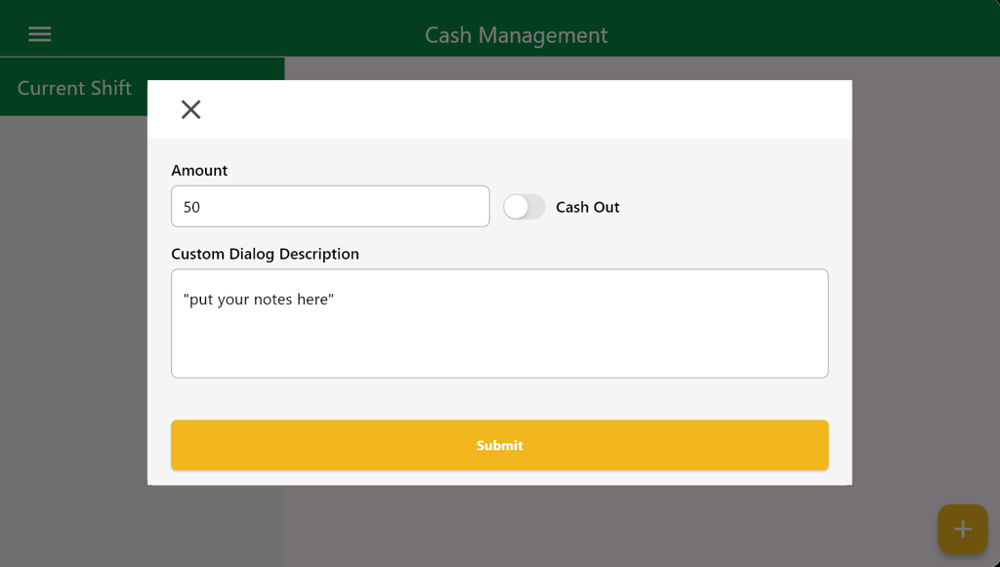
قائمة Cash Management للوردية النشطة.
لإضافة قيد Cash In:
اضغط زر + الأصفر في الزاوية السفلية اليمنى.
تظهر نافذة بحقل Amount ولوحة مفاتيح رقمية. يُظهر المفتاح على اليمين Cash In بالأخضر.
أدخل المبلغ عبر لوحة المفاتيح واضغط done.
تظهر نافذة ثانية بحقل نصي Custom Dialog Description. أضف ملاحظة تصف سبب إضافة النقد.
اضغط زر Submit الأصفر للتأكيد.
لإضافة قيد Cash Out، اتبع نفس الخطوات أعلاه، لكن بدّل المفتاح من Cash In إلى Cash Out قبل إدخال المبلغ.
بعد الحفظ يظهر كلا القيدين في قائمة Cash Management مع اسم الموظف والمبلغ والنوع والحالة. لحذف قيد، اضغط أيقونة سلة المهملات البرتقالية على يمين أي صف.
انتقل إلى Reports من القائمة الجانبية. يحتوي قسم التقارير على ثلاث صفحات من اللوحة اليسرى: Product Sales و Consumption و All Orders.
مبيعات المنتجات
تعرض صفحة Product Sales شريطاً أصفر ملخصاً في الأعلى يُظهر إجمالي Number of Products و Qty Sold و Total Sales للفترة المحددة. أسفله جدول تفصيلي يسرد كل منتج مع ID والاسم و Qty Sold وإجمالي الإيرادات. استخدم قوائم Select Category و Select Product المنسدلة لتصفية النتائج، ومحدد نطاق التاريخ لضبط فترة التقرير.
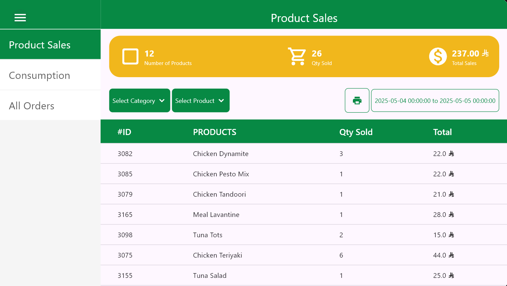
تقرير Product Sales مع عوامل التصفية والإجماليات.
الاستهلاك
يتتبع تقرير Consumption استخدام المواد الخام والمكونات بناءً على الطلبات المسجّلة. هذا التقرير متاح فقط عند تفعيل وحدة المخزون. راجع دليل مستخدم المخزون للتفاصيل.
جميع الطلبات
تعرض صفحة All Orders قائمة كاملة بكل طلب تمت معالجته عبر نقطة البيع. يعرض كل صف Order Date و Source و Ticket و Order Type و Payment Type و Status و Total. تظهر أربعة أزرار إجراءات على كل صف للتأكيد أو الإلغاء أو الطباعة أو عرض تفاصيل الطلب. استخدم محدد نطاق التاريخ في أعلى اليمين للتصفية حسب الفترة.
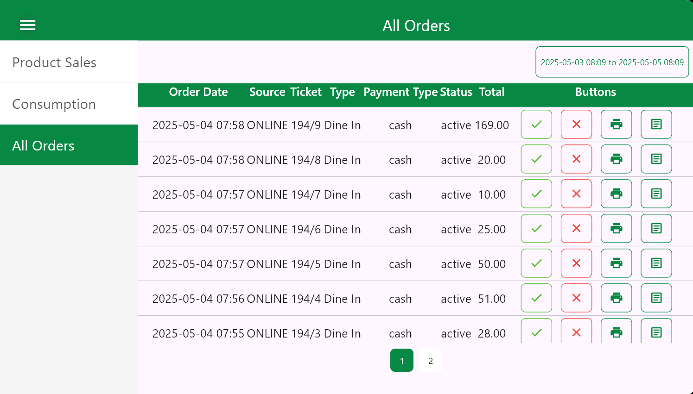
تقرير All Orders يعرض قائمة المعاملات الكاملة.
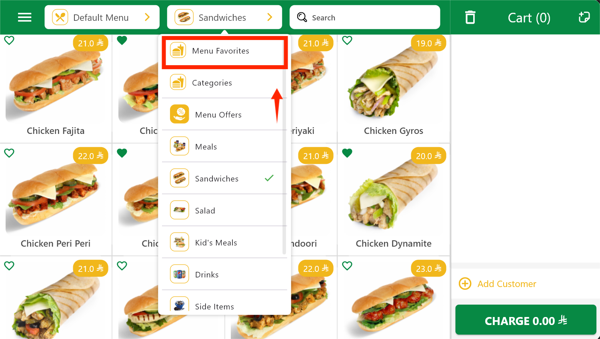
عرض Online Orders لمصادر التوصيل والطلبات الخارجية.
للوصول إلى الإعدادات، اضغط الخطوط الأفقية الثلاثة لفتح القائمة الجانبية، مرّر للأسفل، واضغط Settings.
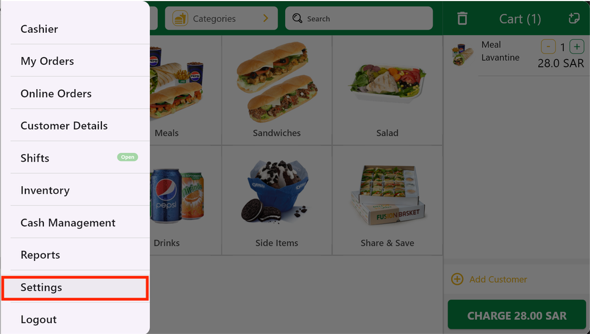
افتح القائمة الجانبية وانتقل إلى Settings.
14.1 الإعدادات العامة
تعرض شاشة الإعدادات خمسة أزرار إجراءات صفراء وقسم إعدادات أسفلها:
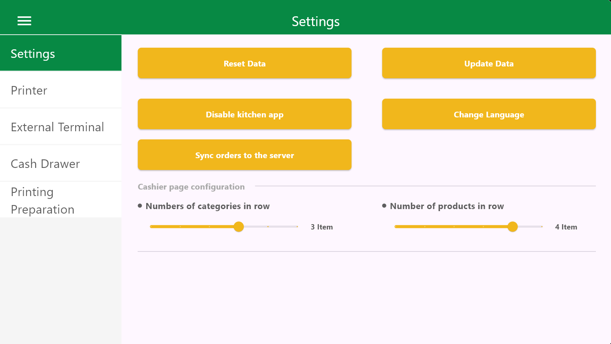
صفحة General Settings مع إجراءات إعادة التعيين والتحديث والمزامنة واللغة.
الزر
الوظيفة
Reset Data
يمسح البيانات المؤقتة المخزّنة محلياً دون التأثير على سجل المبيعات
Update Data
يسحب أحدث المنتجات والفئات والأسعار من السحابة
Disable Kitchen App
يفصل مؤقتاً شاشة المطبخ
Change Language
يبدّل التطبيق بين العربية والإنجليزية
Sync Orders to the Server
يدفع يدوياً الطلبات غير المتزامنة دون اتصال إلى السحابة
أسفل الأزرار، يحتوي قسم إعدادات صفحة Cashier على شريطين تمرير:
Numbers of categories in row - يضبط عدد بلاطات الفئات في كل صف (مثال: 3 عناصر)
Number of products in row - يضبط عدد بلاطات المنتجات في كل صف (مثال: 4 عناصر)
14.2 الطابعة
انتقل إلى Settings -> Printer. اضغط زر + لإضافة طابعة. يظهر نموذج بقائمتين منسدلتين: Type و Printer. اختر طابعتك واضغط ADD للتأكيد.
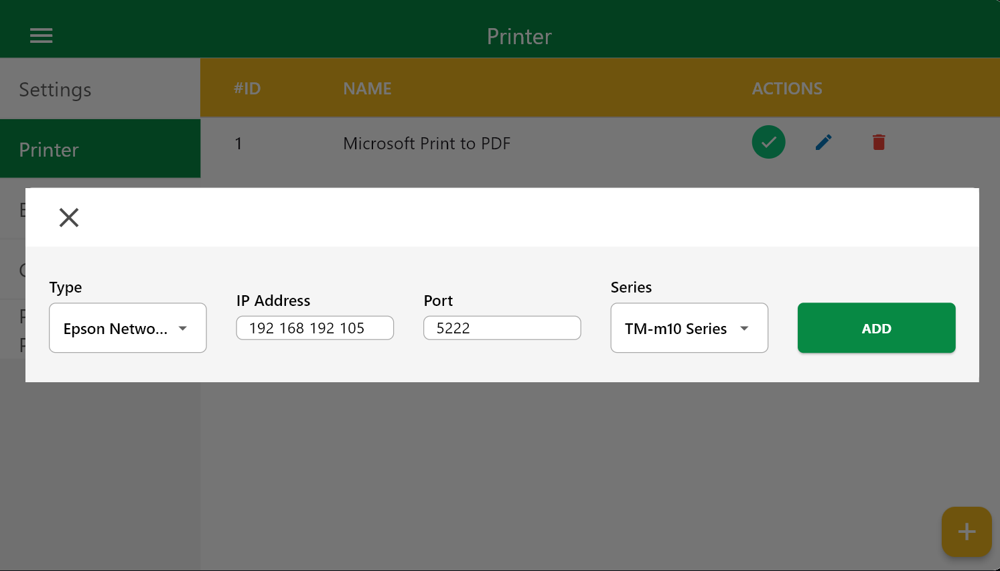
صفحة إعداد الطابعة لإضافة الطابعات أو تعيينها.
14.3 الجهاز الخارجي
انتقل إلى Settings -> External Terminal. فعّل مفتاح External Terminal، ثم املأ الحقول التالية:
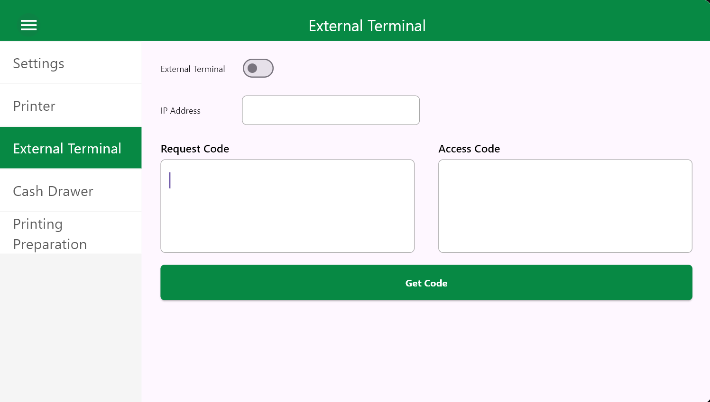
إعداد الجهاز الخارجي لتكامل جهاز البطاقة.
الحقل
التفاصيل
IP Address
عنوان الشبكة لجهاز الدفع
Request Code
رمز يُستخدم لبدء الاتصال الآمن
Access Code
مفتاح يصرّح لنقطة البيع بالتفاعل مع الجهاز
اضغط Get Code لاسترجاع بيانات الاعتماد من الجهاز.
14.4 درج النقد
انتقل إلى Settings -> Cash Drawer. فعّل مفتاح Cash Drawer. أدخل IP Address للدرج واختر الطابعة المرتبطة من القائمة المنسدلة. اضغط زر Open Drawer الأصفر لاختبار الاتصال يدوياً.
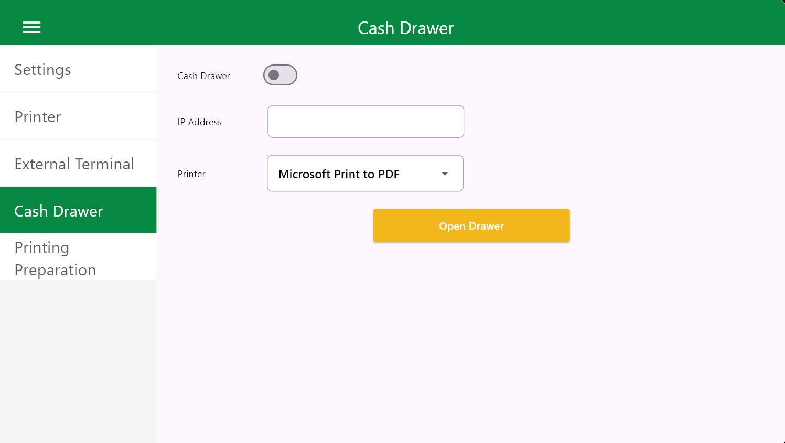
إعدادات Cash Drawer لاختبار أجهزة الدرج وتكوينها.
14.5 طباعة التحضير
انتقل إلى Settings -> Printing Preparation. اضغط زر + لإعداد طابعة تحضير. استخدم قائمة Select Category المنسدلة لاختيار فئات المنتجات التي ستطبع على هذه المحطة، ثم اختر الطابعة من قائمة Select printers المنسدلة. اضغط Add new preparation printer للحفظ.
يدعم تطبيق نقطة البيع التبديل الكامل بين واجهتي العربية والإنجليزية. لتغيير اللغة، انتقل إلى Settings واضغط Change Language.
تتحدث الواجهة بالكامل فوراً بما في ذلك جميع التسميات والأزرار وأسماء الفئات وعناصر السلة وشاشات الإعدادات. تعمل جميع الميزات بشكل متطابق في كلتا اللغتين.